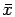

Due: Thursday, October 24, 2002.
You may want to use AMPL on some of these questions.
- 1.
- Birge and Louveaux, page 151, question 3.
- 2.
- Birge and Louveaux, page 169, question 2.
- 3.
- Consider again the Northam Airlines example of question 1 on page 43,
which was part of Homework 1.
- (a)
- Show that the second stage problem has six constraints and nine variables,
once slacks are
included, but that there are only eight bases which need to be considered.
What are the corresponding dual optimal solutions?
- (b)
- Solve the problem using the L-shaped method. Take
as the first stage variables in the solution to the initial relaxation.
Include the simple bounds that x should be no larger than the maximum
demand.
Also include the simple bounds
that the revenue in any scenario can be no larger than the revenue
obtained from the maximum demand for that scenario.
For example, the maximum possible revenue under Scenario 2 is 255,
normalizing so that the revenue from an economy class passenger is 1.
Use the multicut method.
If there are multiple optimal dual solutions, add all the possible
constraints.
You should get the optimal solution after three rounds of adding cutting
planes.
- 4.
- The second stage constraints of a two-stage problem look as follows:
where
is a random variable with support .
Write down the linear program (both primal and dual formulation)
needed to check whether a given 
produces a feasible second-stage
problem. If the second stage problem is not feasible, show how to use your formulation to
produce an inequality in x that cuts off the given .
Construct the inequality explicitly if
.
(Taken from Kall and Wallace.)
John E Mitchell
2002-10-15